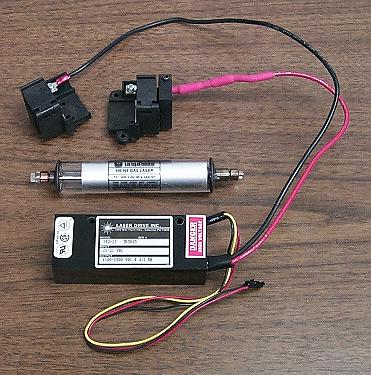
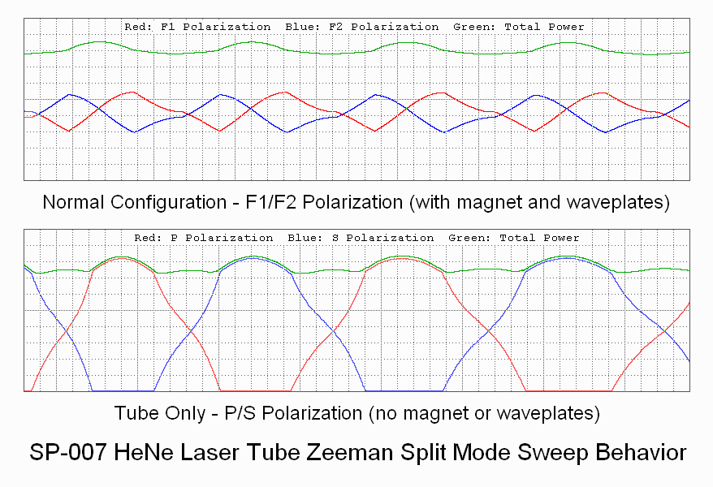

(The style of some parts may vary slightly from what's shown in the photo.)
The following components are included:
WARNING: Most of these tubes have anode-end output. Do not touch anode-end when powered or for awhile after to avoid shocking experience! More on this below.
To power the laser tube proceed as follows:
Please go to: Wiring Instructions for Laser Drive 103-23 HeNe Laser Power Supply.
As noted there are two beams from the tube. The main beam is the stronger one (typically by a factor of 25-100 or more) than the "waste" beam. Which end of the tube is which is set at the time of manufacture. For the tube in the kit, it will need to be determined as both types have been shipped at times. The output beam emerges from the end with the AR coating, which appears blue-ish in reflection. However, it may be the anode or cathode-end. Also as noted, the tube MUST be oriented so the glass-end is wired to the positive (red wire with ballast) of the HeNe laser power supply or else bad things will likely happen.
CAUTION: DO NOT stare into the beam or its specular reflection with your remaining good eye. A 1 mW laser is similar in intensity to that of the noonday Sun. If your original equipment eyeballs are ruined, replacement parts are not currently available at affordable prices.
Beam Characteristics
The output of the HeNe laser tube is single spatial mode TEM00 which means it has a nearly perfect Gaussian profile - a single round spot whose intensity falls off smoothly. This is better than for many other types of lasers without a lot of work.
The tubes provided in this kit may have a wide divergence - 8 milliRadians (8 mR) meaning the beam expands at a rate of 8 parts per thousand. So at 1 meter, the beam (to 1/e points in intensity) will be just over 8 mm in diameter. The beam can be better collimated to reduce this expansion - or focused to a small spot - using one or two lenses. A single 3-4 inch focal length lens can be used to collimate the beam. The effective point source of the beam from the high divergence tubes is a bit less than 2 inches behind the output mirror. Thus, a 2 inch focal length lens just beyond the output will collimate the beam with a narrow diameter. A 4 inch focal length lens can be positioned to diverge faster, collimate, or focus to a point. A pair of lenses can be used to expand the beam by the ratio of their focal lengths. The larger the diameter, the smaller the possible divergence. Surplus Shed has a semi-infinite selection of inexpensive lenses including many suitable for beam expanders.
Longitudinal Modes and Polarization
A short tube like this operates with 1 or 2 longitudinal modes which are generally orthogonally polarized. As the tube heats and expands, the modes move through the neon gain curve as depicted in HeNe Laser Mode Sweep: 140 mm (~5.5 inch) Cavity Length Animation. To view these from the real laser requires a Scanning Fabry-Perot Interferometer (SFPI, also called a "Laser Spectrum Analyzer"). (I have SFPI kits available for 1/10th to 1/50th of commercial versions.) Inserting a polarizing filter in the beam will enable the polarization behavior to be observed. Some tubes will be smooth and continuous as in the animation. Others will be "flippers" where the polarzation of the individual modes may switch as some point during the mode sweep (though adjacent modes will still be orthogonally polarized). The typical mode sweep for a similar length well behaved tube is shown below.
This is a plot of the longitudinal mode intensity with the red and blue being the intensity of the orthogonal polarized components. A plot like this can be produced using a polarizing beam splitter, a pair of photodiodes, and an inexpensive (<$60) data acquisition system. In fact, the least expensive way to display the modes on a Windows computer would be to via µSLC1 even if stabilization is not desired. See µSLC1 Installation and Operation Manual.
The tube in this kit is likely to be a flipper of some sort.
Extension for Zeeman
The following only applies to the Zeeman version of this kit - or where you would simply like to try magnets of your own to see what sort of changes they produce in behavior that can be easily measured.
In addition to the parts listed above, the Zeeman kit includes:
When a HeNe laser tube is placed in an axial magnetic field, the neon gain curve is split into two parts shifted up and down in optical frequency. When the tube meets certain criteria including it be random polarized, the result is that the output will be right or left circularly polaried depending on which of the split gain curves contributes to the lasing. As a result of mode pulling, each of the lasing lines is shifted slightly in optical frequency. When the they are near the center between the split gain curves they are pulled apart by up to a few MHz depending on factors including the length of the laser cavity, cavity losses including mirror reflectivity.
As the tube heats and expands, the modes move through the neon gain curve, the Zeeman behavior changes. This is shown in HP/Agilent 5517 Zeeman-Split HeNe Laser Mode Sweep Animation. The 5517 tube is similar to the short tube in this kit as far as Zeeman is concerned.
A high speed photodiode behind a linear polarizer can be used to detect the difference (or "split") frequency. And a Quarter WavePlate (QWP) can be used to convert the circular polarization into components with orthogonal linear polarization that are the two optical frequencies.
The CP can also be used with its linear polarizer side facing the laser. The protective film must be removed because it also affects polarization!
Much more (with minimal hairy math) may be found at Explanation of Axial Zeeman HeNe Laser Behavior.
Adding the Magnets
It may be useful to trim the tube mounting brackets or to replace them entirely with tube clips to provide better access to the full length of the tube.
CAUTION: These magnets are small but powerful, though not in the flesh squashing league of larger ones. :) But they should be kept well away from magnetic media, and small children and pets. The magnets can be configured in a variety of ways - and feel free to experiment. But 7 rows of 7 magnets all with the same N-S polarity is probably optimal for achieving the maximum "split" frequency from the laser. They won't stay put on their own so the individual stacks of 7 magnets should be wrapped in Kapton or similar tape and then secured surrounding the tube with some pieces of bicycle inner tube or something similar. Take care to keep well clear of the anode - HV end. Add generous insulation. Arcing to the magnets is bad form and may damage the power supplies. The type of thick clear plastic often used to package consumer and grocery items makes an excellent high voltage insulator as shown below. Several layers of Kapton tape (or even plastic packing tape) can be added surrounding the anode-end cap to provide additional insulation.
A single magnet and two "sticks" of 7 magnets would look like:
+----+ |N S| Magnet +----+ +----+----+----+----+----+----+----+ |N S|N S|N S|N S|N S|N S|N S| Stick 1 +----+----+----+----+----+----+----+ +----+----+----+----+----+----+----+ |N S|N S|N S|N S|N S|N S|N S| Stick 2 +----+----+----+----+----+----+----+
The direction NS or SN doesn't make any real difference for these experiments. The individual magents will, uh, stick together. :) But the "sticks" will repel each-other and thus need to be constrained as shown below.

By using a plastic sleeve, the tube can be slipped inside and be close to the magnets without fear of short circuits or arcing. The length of the sleeve will need to be adjusted to accommodate the laser mounting brackets. Alternatively, the tube can be installed with insulation inside a non-ferrous cylinder as in the complete Zeeman laser shown below.
Rare earth magnets are more sensitive to heat than Alnico magnets, so if installing a heater surrounding the tube, keep the array of magnets slightly away from it with air or plastic in between. Here they are actually secured to an aluminum cylinder inside which the tube and heater (well insulated) is installed.
When powered with the magnets in place, the appearance of the glow of the tube and laser beam won't be noticeably different by eye, though power variation during mode sweep and actual output power may change enough to be easily detected. The fun will begin when using simple instruments.
Zeeman Mode Sweep
With a sufficiently powerful magnetic field, the entire character of the mode sweep changes dramatically. Here is a comparison of the mode sweep with and without a magnetic field for the same short tube, above:

To observe this requires converting the circular polarization of the Zeeman modes to linear polarization using a Quarter WavePlate (QWP). Its optical axis should be oriented at 45 degrees to the baseplate so that the linearly polarized modes are at 0 and 90 degrees. If the QWP's optical axis is not labeled, it will be necessary to determine it or simply adjust the orientation until the resulting plots for the orthogonal axes are most different.
The same data acquisition setup as used above for the non-Zeeman mode sweep will result in a plot similar to the one above.
The Beat Signal
To observe the split or beat signal, an oscilloscope and/or frequency counter with a bandwidth of at least 1 MHz will be required.
PD
+5 to 9 VDC o-----------|<|---------+--------o Output
C A |
/
R1 \ Scope or
/ Counter
\
|
Return o-----------------------+--------o Ground
Put the linear polarizer or PBS cube in the output beam in front of photodiode. The polarizer is required to convert the left and right circular polarized components to a combined linearly polarized beam that will result in a signal from the PD. Since the two components are circularly polarized, its orientation doesn't matter. Now, as the laser tube warms up and expands instead of simply producing variations in the polarized output, during a portion of the mode sweep cycle, there should be an oscillation varying slightly in frequency. For this tube and 7x7 magnets positioned close to the anode (but well insulated!), it will typically be around 1 MHz. There is a threshold magnetic field below which there will never be a beat, so start with the 7x7 magnet arrangement which should work with the tube in the kit. However, it is possible that 10 sets of 5 magnets will be even better. The maximum beat frequency will occur when the magnets best overlap the active bore discharge.

This shows the bare tube snug with its heater inside a plastic sleeve with 7 sets of 7 rare earth magnets secured to it with slices of bicycle inner tube, along with a polarizer and a built up version of the beat detector in the schematic, above, with a swing arm and 9 V battery inside. The position of the magnets along the tube was selected to maximize their overlap with the active bore discharge, resulting in the highest peak split frequency. As the tube warms up and the cavity length increases, a beat will appear periodically during mode sweep at a frequency peaking around 1 MHz for the 6 inch tube and the set of 49 rare earth magnets. The beat will probably be present between 50 and 75 percent of the cycle, and will change frequency somewhat during this time. With a greater magnetic field, the percentage of the cycle over which there is a beat decreases. For example, it may be less than 10 percent for an HP-5517D laser (shown above) which locks with a ~3.75 MHz split frequency.
Use of a Scanning Fabry-Perot Interferometer
It is also possible to observe the longitudinal modes of the Zeeman laser using a Scanning Fabry-Perot Interferometer (SFPI). However, the two components of the split Zeeman mode cannot be resolved by the setup in one of the SFPI kits or the most common commercial SFPIs even costing thousands of dollars. They are simply two close together. It is possible to build as SFPI with sufficient resolution, but that is definitely for the advanced course. ;-) Inquire if interested or check my eBay listing for "Scanning Fabry-Perot Interferometers".
Viewing the modes with an SFPI would still be instructive though, especially if it can display the two polarizations simultaneously to separate channels on a color DSO. That would be almost as good. Adding dual polarization to a standard SFPI (kit or commercial) simply requires a polarizing beam splitter and a pair of photodiodes.
Stabilized two-frequency Zeeman HeNe laser
The photo below shows a complete system constructed using a tube, heater, and magnets like those in this kit.